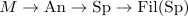

homological serre spectral sequence is multiplicative for monoids
Proposition
The homological serre spectral sequence lifts to a functor
i.e. a fiber sequence of anima valued monoids yields a multiplicative spectral sequence
Proof
We follow the construction of the homological serre spectral sequence, but upgrade it to a multiplicative spectral sequence: Let $F \rightarrow N \rightarrow M$ be a fiber sequence with $N \rightarrow M$ a map of monoids. Then in particular it upgrades to a fiber sequence in $\mathrm{Mon}(\mathrm{An})$.
Now using map of anima valued monoids is a monoidal functor we get that the functor
admits canonically a monoidal structure. Then we may postcompose with lax monoidal functors

where we use that whitehead filtration functor is lax symmetric monoidal & suspension spectrum functor is symmetric monoidal in order to get a functor $\mathrm{Alg}(\mathrm{Fun}(M,\mathrm{An})) \rightarrow \mathrm{Alg}(\mathrm{Fun}(M, \mathrm{Fil}(\mathrm{Sp})$
Now by colimit over an E_n anima valued monoid is E_n monoidal with respect to the E_n day convolution we get an induced functor
whose underlying spectrum gives rise to the homological serre spectral sequence.
using: